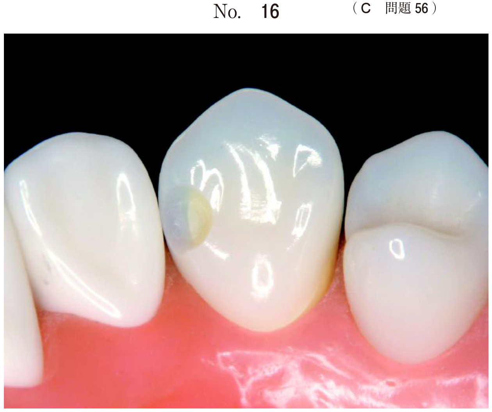
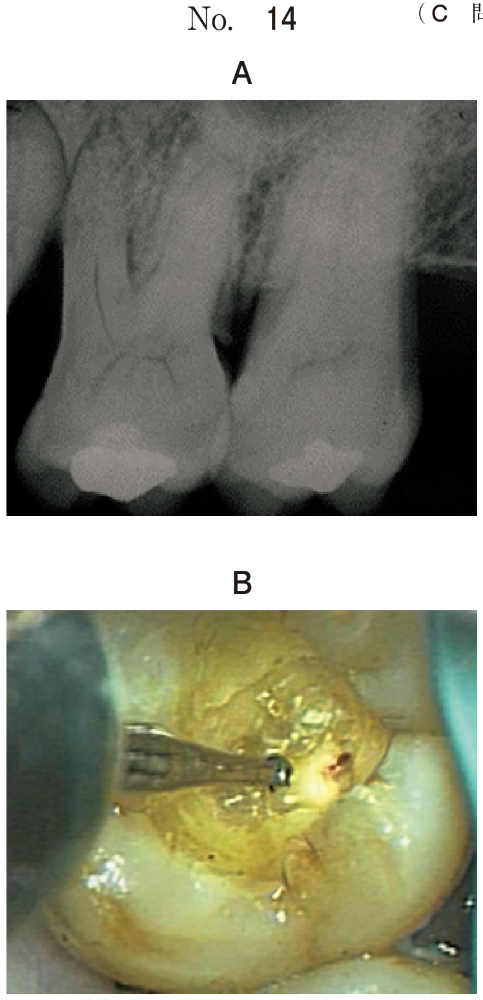
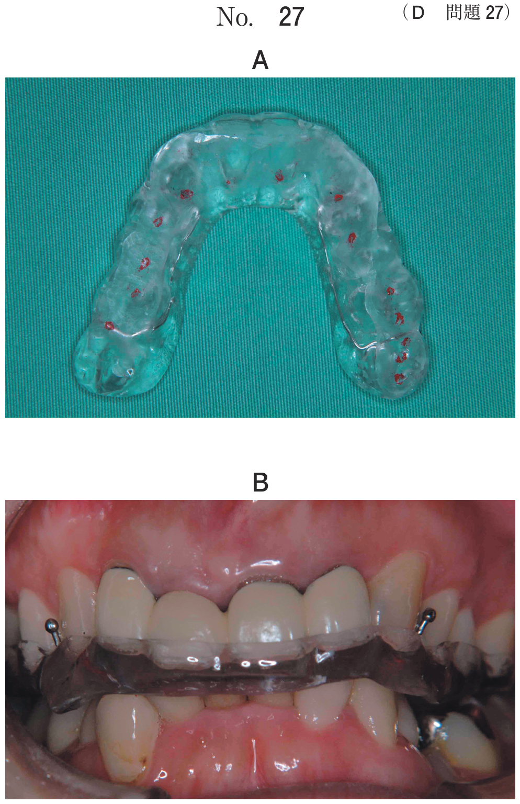

常染色体優性遺伝の先天性骨疾患。
| 項目 | 内容 |
|---|---|
| 骨格所見 | 鎖骨の欠損・低形成（両肩を前方で接触させることができる）、頭蓋骨癒合・泉門の閉鎖遅延（大泉門開存）、低身長 |
| 口腔所見 | 口蓋裂、永久歯の多数歯埋伏、萌出遅延、乳歯晩期残存、過剰歯 |
常染色体優性遺伝。
| 項目 | 内容 |
|---|---|
| 骨格所見 | 頭蓋骨早期癒合、中顔面の低形成（上顎劣成長） |
| 顔面所見 | 両眼開離、眼球突出、外斜視 |
| 口腔所見 | 口蓋裂 |
| 呼吸 | 上咽頭腔の狭窄 → 口呼吸のリスク |
常染色体優性遺伝。
| 項目 | 内容 |
|---|---|
| 骨格所見 | 頭蓋骨早期癒合による尖頭、合指症 |
| 顔面所見 | 両眼開離、眼球突出 |
| 口腔所見 | 口蓋裂 |
| 精神発達 | 精神発達遅滞を伴うことがある |
| 呼吸 | 上咽頭腔の狭窄 → 口呼吸のリスク |
常染色体優性遺伝。第一・第二鰓弓の発生異常。
| 項目 | 内容 |
|---|---|
| 顔面所見 | 両側性に生じる顔面低形成（顎骨・頬骨）：小顎症、小耳症、開咬 |
| 口腔所見 | 口蓋裂、巨口症（横顔裂） |
| 注意点 | 後鼻腔狭窄による気道閉塞に注意 |
※Treacher Collins症候群は主に下顎低形成だが、上顎にも影響する。Goldenhar症候群（第一・第二鰓弓症候群）は片側性の顔面低形成である点が異なる。
常染色体優性遺伝。
12歳の男児。歯の生え代わりが遅いことを主訴として来院した。幼少時から遺伝疾患を指摘されているという。低身長と歯列不正が認められる。初診時の上半身の写真（別冊No.26A）、口腔内写真（別冊No.26B）及びエックス線画像（別冊No.26C）を別に示す。この疾患でよくみられるのはどれか。1つ選べ。

【解説】「歯の生え代わりが遅い」＋「遺伝疾患」＋「低身長」＋ エックス線で多数歯埋伏 → 鎖骨頭蓋骨異形成症。鎖骨頭蓋骨異形成症では泉門の閉鎖遅延がみられ、大泉門閉鎖遅延（e）が正解。a（合指）はApert症候群。b（耳介変形）はTreacher Collins症候群やGoldenhar症候群。
10歳の女児。上の前歯が生えてこないことを主訴として来院した。初診時の顔面写真（別冊No.20A）、口腔内写真（別冊No.20B）及びエックス線画像（別冊No.20C）を別に示す。考えられるのはどれか。1つ選べ。

【解説】「前歯が生えてこない」10歳女児。エックス線で多数の埋伏歯が認められる。永久歯の多数歯埋伏・萌出遅延は鎖骨頭蓋骨異形成症（d）の特徴。a（軟骨無形成症）は低身長・四肢短縮が特徴で多数歯埋伏は主症状ではない。c（Robinシークエンス）は小下顎症・舌根沈下・気道閉塞。
上咽頭腔の狭窄による口呼吸のリスクが高いのはどれか。2つ選べ。
【解説】Apert症候群（a）とCrouzon症候群（b）はいずれも頭蓋骨早期癒合と中顔面低形成（上顎劣成長）を特徴とし、上咽頭腔の狭窄による口呼吸のリスクが高い。c（Robinシークエンス）は小下顎症による舌根沈下で気道閉塞が起こるが、上咽頭腔の狭窄ではない。d（Treacher Collins症候群）は後鼻腔狭窄の可能性はあるが上咽頭腔狭窄が主ではない。e（Beckwith-Wiedemann症候群）は巨舌・巨体が特徴。
8歳3か月の女児。前歯が嚙まないことを主訴として来院した。頭蓋縫合早期癒合、合指および口蓋裂を認めたという。これらに対する手術を既に受けている。初診時の顔貌写真（別冊No.39A）、口腔内写真（別冊No.39B）及びエックス線写真 （別冊No.39C）を別に示す。診断名で正しいのはどれか。1つ選べ。

【解説】「頭蓋縫合早期癒合＋合指＋口蓋裂」の3徴候からApert症候群（a）と診断できる。Crouzon症候群にも頭蓋骨早期癒合があるが、合指症は伴わない。b（鎖骨頭蓋骨異形成症）は鎖骨欠損・多数歯埋伏が特徴。c（Sturge-Weber症候群）は顔面の血管腫。e（Beckwith-Wiedemann症候群）は巨舌・巨体・臍帯脱出。